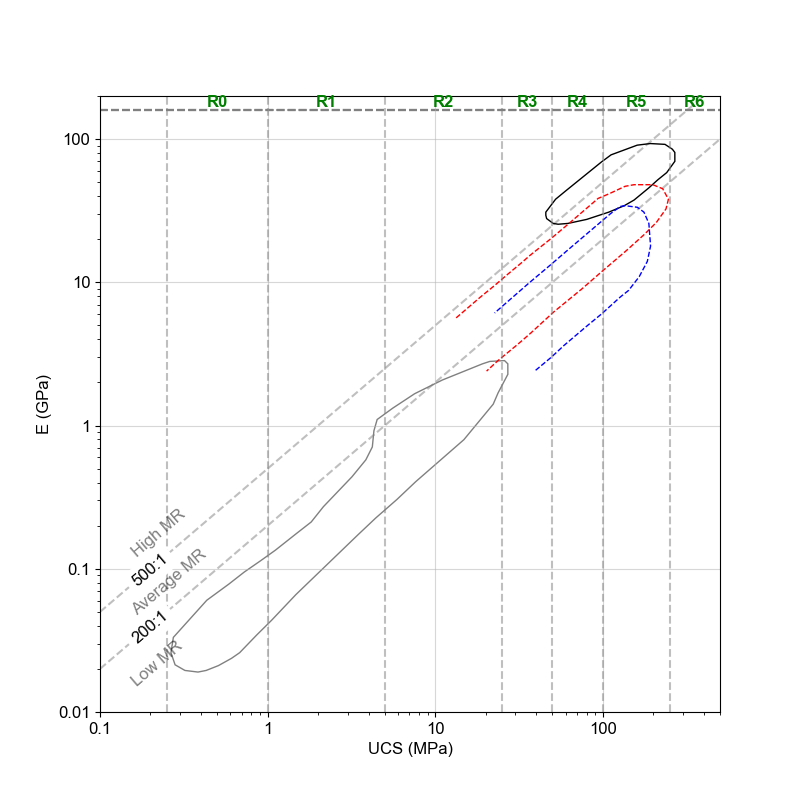
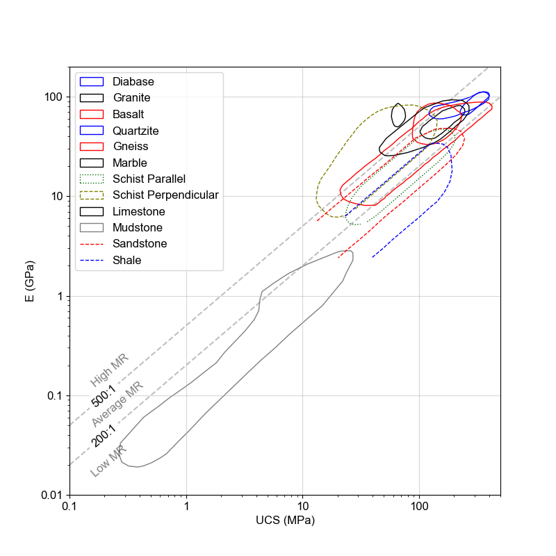
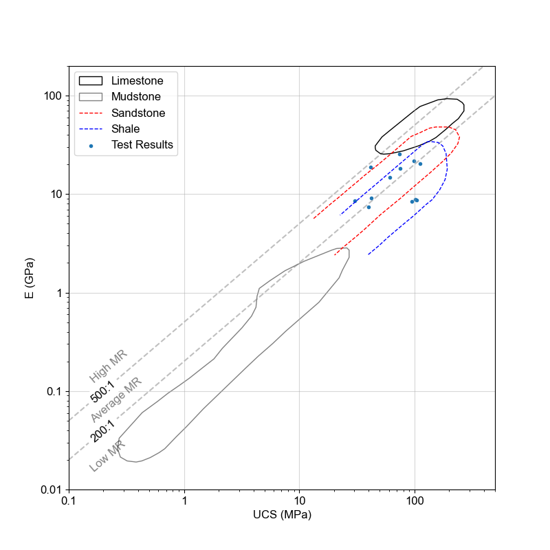
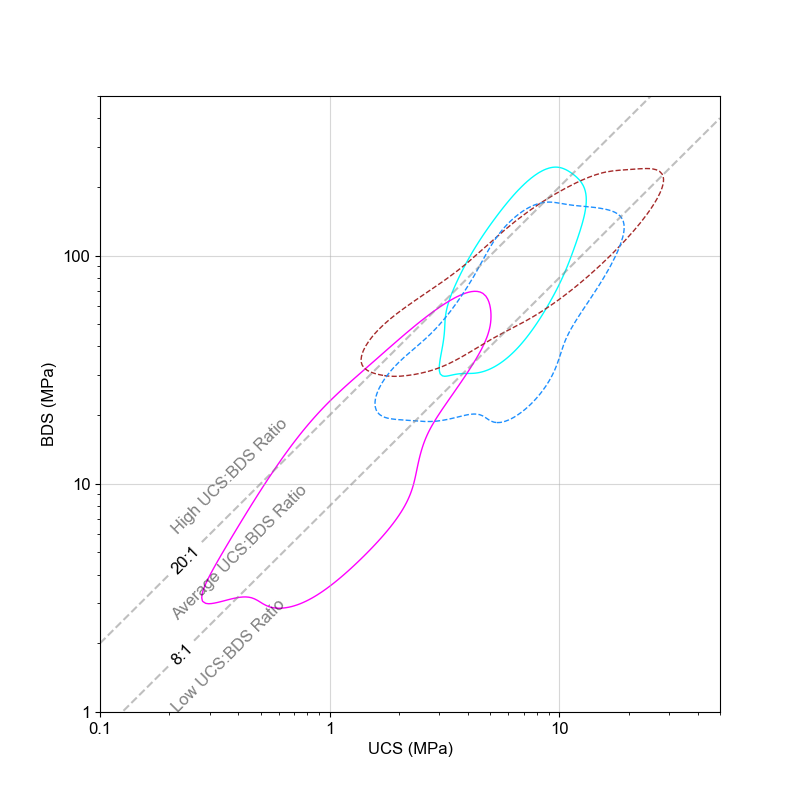
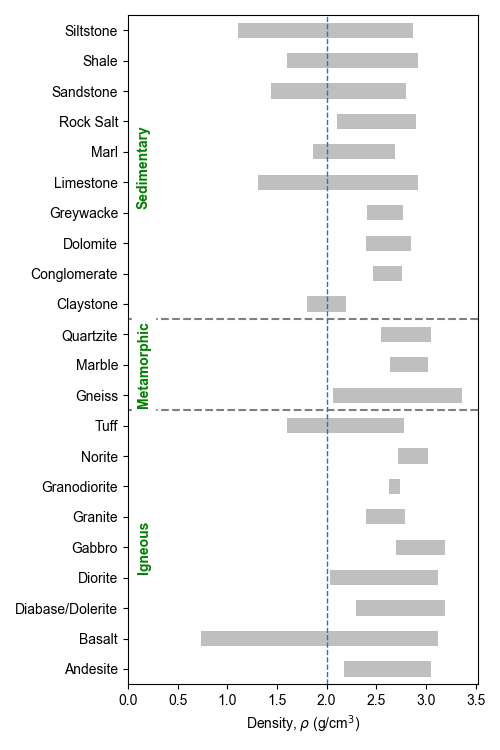

Introduction
Makes it easier to classify the Deere-Miller - Modulus Ratio [MR] and Tatone et al. - Strength Ratio [SR].
For any suggestions, bugs or if you wish to contribute to the project => REPO
Deere-Miller - Modulus Ratio (MR)
Cite: Deere DU, Miller RP. Engineering Classification and Index Properties for Intact Rocks. Fort Belvoir, VA: Defense Technical Information Center; 1966.
Loads the digitized Deere_Miller clusters and plots them based on the Major Rock Type (i.e., Igneous / Metamorphic / Sedimentary).
Plot all Major Rock Type in one graph.
Plots them individually.
Deere-Miller [Modulus Ratio] Example
Plot the Modulus Ratio of just the Sedimentary clusters with the ISRM 1979 category classification.
import pyrockmodulus
import matplotlib.pyplot as plt
xx = pyrockmodulus.modulus_ratio()
xx.initial_processing(plot_all_clusters=False, rock_type_to_plot='Sedimentary', ucs_class_type="ISRMCAT\n1979")
plt.ylabel("E (GPa)")
plt.xlabel("UCS (MPa)")
plt.show()

Plot the Modulus Ratio with all the categories without the classification. Legend enabled.
import pyrockmodulus
import matplotlib.pyplot as plt
xx = pyrockmodulus.modulus_ratio()
xx.initial_processing(plot_all_clusters=True)
plt.ylabel("E (GPa)")
plt.xlabel("UCS (MPa)")
plt.legend()
plt.show()

Plot the Modulus Ratio of just the Sedimentary clusters overlaid with data from tests.
import pyrockmodulus
import matplotlib.pyplot as plt
# Data Set
ucs_data = [75.33, 99.03, 111.69, 30.17, 73.76, 41.69, 42.09, 60.99, 39.65, 94.52, 104.6, 102.03]
E_data = [18.31, 21.85, 20.51, 8.62, 25.72, 18.68, 9.2, 14.67, 7.38, 8.48, 8.7, 8.82]
xx = pyrockmodulus.modulus_ratio()
plotting_axis = xx.initial_processing(rock_type_to_plot='Sedimentary')
# Plot the data on the Deere-Miller axis
plotting_axis.scatter(ucs_data, E_data, label='Test Results', marker='.')
plt.ylabel("E (GPa)")
plt.xlabel("UCS (MPa)")
plt.legend()
plt.show()

Tatone et al. - Strength Ratio (SR)
Tatone, B.S.A., Abdelaziz, A. & Grasselli, G. Novel Mechanical Classification Method of Rock Based on the Uniaxial Compressive Strength and Brazilian Disc Strength. Rock Mech Rock Eng 55, 2503–2507 (2022). https://doi.org/10.1007/s00603-021-02759-7
Loads the constructed Tatone et al. UCS:BDS clusters and plots them based on the Major Rock Type (i.e., Igneous / Metamorphic / Sedimentary).
Plot all Major Rock Type in one graph.
Plots them individually.
The functionality is similar to that of the modulus ratio.
import pyrockmodulus
import matplotlib.pyplot as plt
xx = pyrockmodulus.strength_ratio()
xx.initial_processing(plot_all_clusters=False, rock_type_to_plot='Sedimentary')
plt.ylabel("BDS (MPa)")
plt.xlabel("UCS (MPa)")
plt.show()

Poisson’s Ratio and Density Plots
Plot the most common ranges of density and poisson’s ratio for rock. This data can then be overlaid with data from a specific source to show comparison.
import matplotlib.pyplot as plt
import pyrockmodulus
xx = pyrockmodulus.poisson_density()
df_data = xx.initial_processing()
ax1 = xx.plot_span_chart(df_data, ['Min_D', 'Max_D'], 'Density', r'$\rho$ g/cm$^{3}$')
ax1.axvline(2.0, lw=1, ls='--')
plt.show()

UCS Classification Systems
This file holds the dictionaries for the various UCS classification systems available. References for those systems are within the file. All values must be in MPa. Available classification systems ‘ISRM\n1977’, ‘ISRMCAT\n1979’, ‘Bieniawski\n1974’, ‘Jennings\n1973’, ‘Broch & Franklin\n1972’, ‘Geological Society\n1970’, ‘Deere & Miller\n1966’, ‘Coates\n1964’, ‘Coates & Parsons\n1966’, ‘ISO 14689\n2017’, ‘Anon\n1977’, ‘Anon\n1979’, ‘Ramamurthy\n2004’
UCS Classification System Examples
Display the limits and the classification system default in the script.
import pyrockmodulus.rock_variables as ucs_class
ucs_class.ucs_strength_criteria('ISRMCAT\n1979')
Output
(['R0', 'R1', 'R2', 'R3', 'R4', 'R5', 'R6'], [0.25, 1, 5, 25, 50, 100, 250, 1000])
A horizontal bar like plot to show the various uniaxial strength classification systems.
import pyrockmodulus.ucs_bar_chart_plot as ucs_classification_plot
import matplotlib.pyplot as plt
ucs_class = ucs_classification_plot.initial_processing()
plt.show()